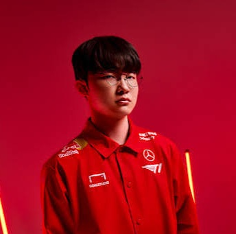
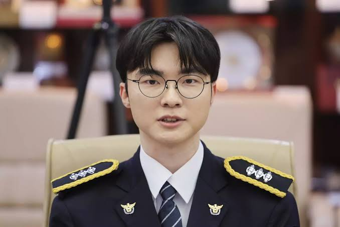

Biographie
Faker, de son vrai nom Lee Sang-hyeok (en coréen 이상혁), est un joueur professionnel sud-coréen de League of Legends né le 7 mai 1996. Surnommé le Roi Démon Immortel, il joue au poste de midlaner au sein de T1 (anciennement SK Telecom T1) depuis le début de sa carrière en 2013. En 2020, il devient co-propriétaire de la structure à hauteur de 5,6 à 6 %. Il a remporté 10 titres de champion de la ligue coréenne, la League of Legends Champions Korea (LCK), 1 titre de champion de l'Esport World Cup en 2024, 2 titres de champion du Mid-Season Invitational (MSI), 2 médailles d'or et 1 médaille d'argent aux Jeux asiatiques. Il est le seul à avoir remporté six fois le Championnat du monde de League of Legends. Avec 3 de ses coéquipiers (Oner, Gumayusi et Keria), ils sont également les premiers et les seuls à avoir remporté ce titre trois fois d'affilé. De par ses titres et performances, il est largement considéré comme le meilleur joueur de l'histoire de sa discipline, ainsi que comme le plus grand esportif de tous les temps. Faker est régulièrement comparé à Michael Jordan, Ronaldo ou Lionel Messi pour sa domination dans sa discipline et son impact au-delà
Ses accomplissements individuels incluent des distinctions telles que deux récompenses du Meilleur Joueur (ou MVP) du Championnat du monde, une récompense du MVP du MSI, et deux récompenses du joueur de l'année en LCK. Il détient plusieurs records de la ligue coréenne, notamment le premier joueur à avoir atteint les 1000, 2000, et 3000 éliminations, le premier à avoir atteint les 5000 assistances, et le premier à avoir atteint 700 matchs joués. Il détient aussi plusieurs records au sein du Championnat du monde : nombre de participation, nombre de matchs joués, nombre de victoires, nombre de titres, nombre d'éliminations. Pour ses nombreuses réalisations, Faker a reçu des distinctions extérieures telles que 3 titres de Meilleur Athlète Esport de l'année aux Game Awards, 2 titres de Joueur PC de l'année et un titre de Joueur PC de la Décennie aux Esports Awards. Il a figuré dans la liste des 100 personnalités les plus influentes du monde du sport (Time 100) établie par le magazine Time en 2026. Il est intronisé au Esport Hall of Fame d'ESL en 2019 par un vote du public. En mai 2024, Riot Games (l'entreprise éditrice du jeu League of Legends) annonce que Faker est le premier joueur intronisé au LoL Esports Hall of Legends. Faker est considéré comme un trésor national vivant en Corée du Sud, aux côtés de stars comme le groupe de K-pop BTS, le réalisateur Bong Joon-ho, le footballeur Son Heung-min ou la patineuse Kim Yuna. Il est acclamé comme une star en Asie par d'importantes communautés de fans qui le voient comme une idole et un modèle. Il participe à de nombreuses publicités pour de grandes marques (Google, McDonald's, Samsung, SK Telecom, Xbox) avec d'autres célébrités (Son Heung-min, Karina), mais également à plusieurs émissions télévisées. Faker est même immortalisé sur un timbre national en Corée du Sud, tiré à 840 000 exemplaires, et faisant l'objet d'une exposition temporaire au musée postal de la Poste centrale de Séoul. En janvier 2026, Faker se voit décerner, par la président sud-coréen Lee Jae Myung, la médaille Cheongnyong (en coréen 청룡장, Dragon Bleu), le plus haut grade de l'Ordre du Mérite sportif du pays. C'est la première fois qu'un esportif reçoit une telle décoration. Il est également nommé officier de police honorifique en juillet 2026 dans le cadre de la prévention contre les jeux d'argent en ligne.

Faker est l'athlète esportif le plus rentable de l'histoire. Ses récompenses en tournoi lui ont rapporté environ 2 millions de dollars sur ses 13 ans de compétition. Son salaire actuel est estimé entre 6 et 8 millions de dollars annuel et ses sponsors et partenariats lui rapporteraient entre 1 et 3 millions de dollars chaque année. De plus, Faker possède 5,6 % à 6 % des parts de T1 ainsi qu'un immeuble commercial de neuf étages à Séoul (8,3 millions de dollars d'achat en 2020) lui assurant des revenus locatifs. Son patrimoine net est ainsi estimé entre 10 millions et 25 millions de dollars.
